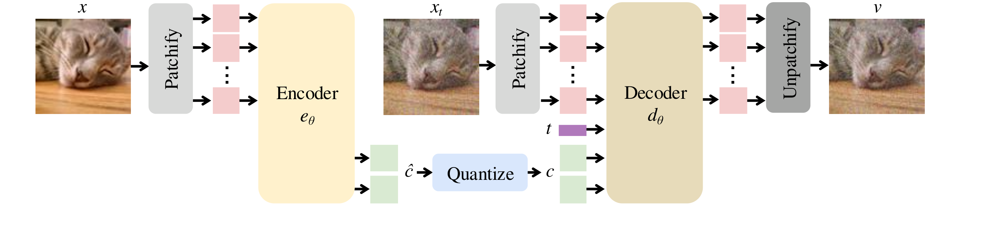
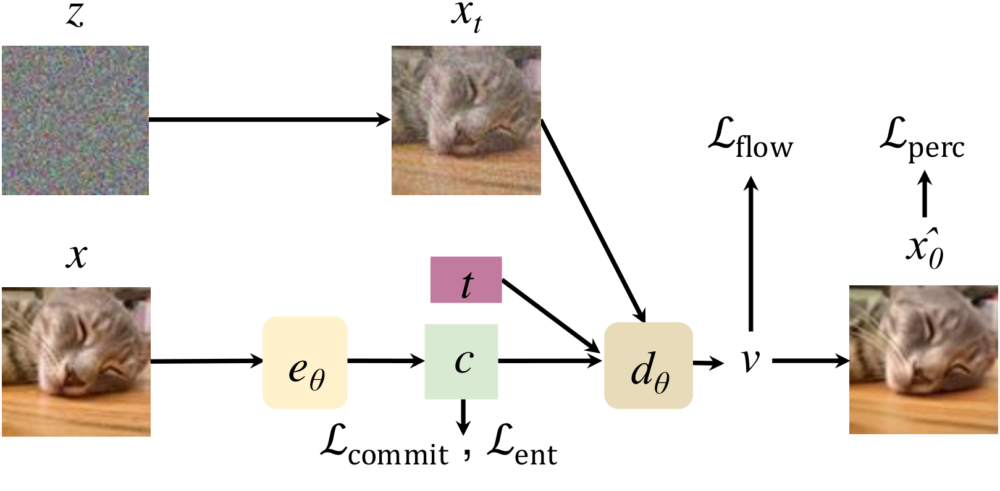
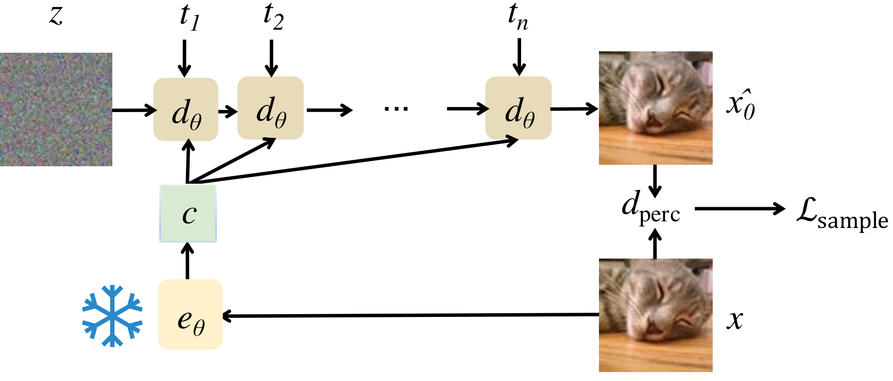

.png)
Please check out our galleries (FlowMo-Lo gallery, FlowMo-Hi gallery) for more visual comparisons against baselines!
Since the advent of popular visual generation frameworks like VQGAN and Latent Diffusion Models, state-of-the-art image generation systems have generally been two-stage systems that first tokenize or compress visual data into a lower-dimensional latent space before learning a generative model. Tokenizer training typically follows a standard recipe in which images are compressed and reconstructed subject to a combination of MSE, perceptual, and adversarial losses. Diffusion autoencoders have been proposed in prior work as a way to learn end-to-end perceptually-oriented image compression, but have not yet shown state-of-the-art performance on the competitive task of ImageNet1K reconstruction. In this work, we propose FlowMo, a transformer-based diffusion autoencoder. FlowMo achieves a new state-of-the-art for image tokenization at multiple bitrates. We achieve this without using convolutions, adversarial losses, spatially-aligned 2-dimensional latent codes, or distilling from other tokenizers. Our key insight is that FlowMo training should be broken into a mode-matching pre-training stage and a mode-seeking post-training stage. We conduct extensive analysis and ablations, and we additionally train generative models atop the FlowMo tokenizer and verify the performance.
FlowMo is implemented as a diffusion autoencoder with transformer-based encoder and decoder. The architecture diagram is shown below.
The encoder maps an image x (with an initial latent c₀) to a continuous latent representation:
which is quantized using lookup-free quantization, as
The decoder models a velocity field that transforms a noisy image back to a clean one. A noisy image xt is defined as:
The decoder then predicts:
First, FlowMo is trained end-to-end as a diffusion autoencoder. A diagram of the Stage 1A training is shown below: 
The model is trained end-to-end with a diffusion loss
Additional losses include a perceptual loss \( \mathcal{L}_{\text{perc}} \) and quantization losses \( \mathcal{L}_{\text{commit}} \) and \( \mathcal{L}_{\text{ent}} \). The overall loss is:
In Stage 1B of training, the goal is to constrain the model to drop modes of the reconstruction distribution which are not perceptually close to the original image. A diagram is shown below:

In this stage, the encoder is fixed and the decoder is fine-tuned using a sample-level perceptual loss:
The total loss during this stage becomes:
Please check out our paper for detailed comparisons and analysis, and our galleries (FlowMo-Lo , FlowMo-Hi) for interactive comparisons.
@misc{sargent2025flowmodemodeseekingdiffusion,
title={Flow to the Mode: Mode-Seeking Diffusion Autoencoders for State-of-the-Art Image Tokenization},
author={Kyle Sargent and Kyle Hsu and Justin Johnson and Li Fei-Fei and Jiajun Wu},
year={2025},
eprint={2503.11056},
archivePrefix={arXiv},
primaryClass={cs.CV},
url={https://arxiv.org/abs/2503.11056},
}